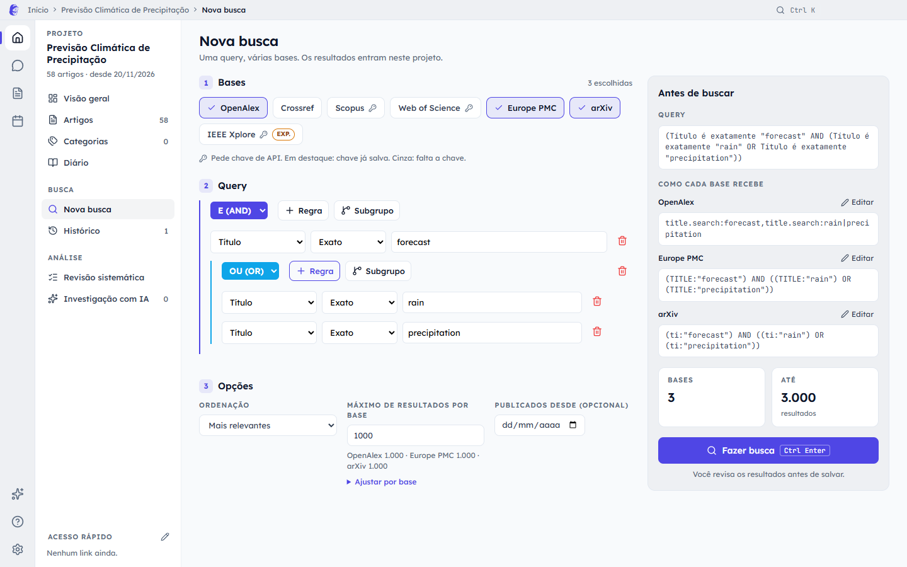
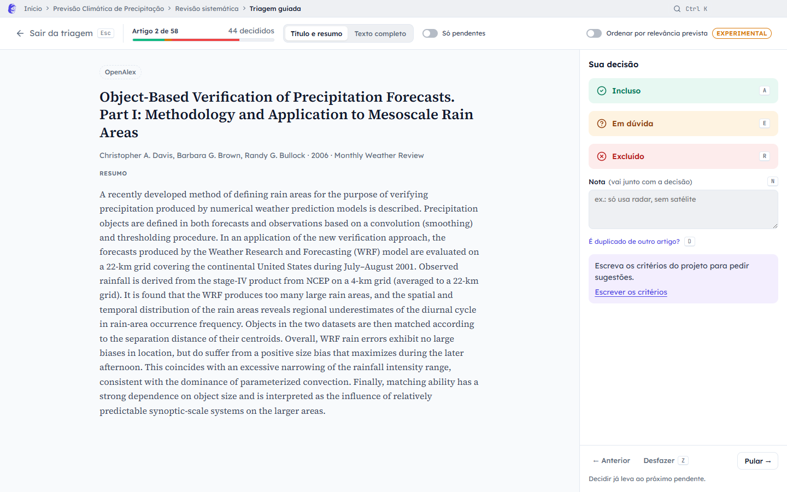
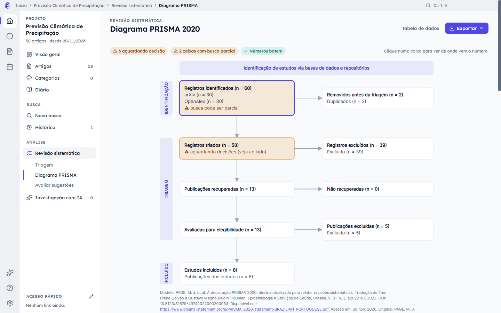
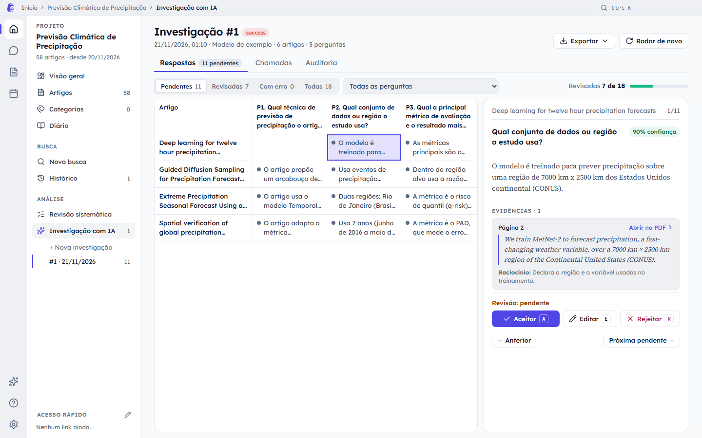
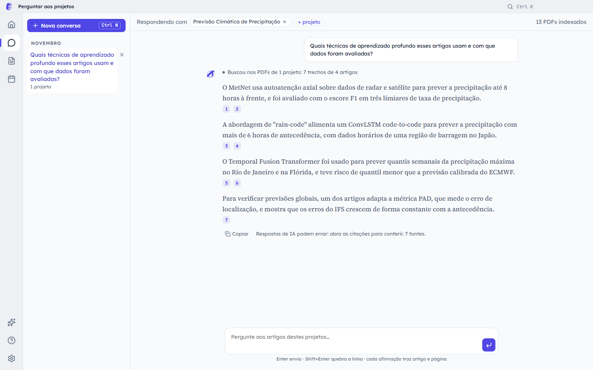
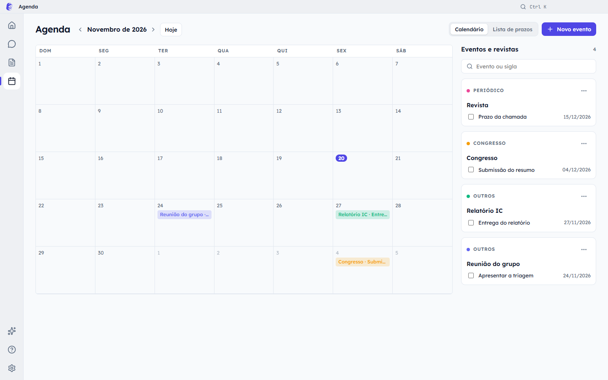

Tudo o que você precisa para conduzir pesquisas acadêmicas de alto nível, com total controle sobre os seus dados e privacidade garantida.
Carregando versão...
Ler os TutoriaisMonte a busca com o construtor visual de regras e veja como cada base recebe a consulta. OpenAlex, Crossref, Europe PMC e arXiv funcionam sem chave; Scopus, Web of Science e IEEE Xplore (experimental) usam a chave da sua instituição.
Você revisa os resultados antes de salvar, baixa os PDFs de acesso aberto e exporta o relatório da estratégia de busca.

Leia o resumo de um artigo por vez e decida com as teclas A, E e R (incluso, em dúvida, excluído), com uma nota que vai junto da decisão. A triagem tem duas etapas, título e resumo e depois texto completo, e os rótulos são seus. Excluir arquiva o artigo no projeto, com o rótulo como motivo.
A ajuda da IA na triagem é experimental: sugere um rótulo e uma ordem de leitura a partir dos seus critérios, e a decisão continua sendo sua.

O diagrama sai das decisões que você já tomou: registros identificados por base, removidos antes da triagem, avaliados, excluídos e incluídos. Clique numa caixa para ver de onde vem o número.
Exporte o diagrama e a tabela de dados para o seu artigo.

Faça as mesmas perguntas a cada PDF do projeto e receba as respostas em grade, cada uma com o trecho lido e a página. Você aceita, edita ou rejeita cada resposta, e uma auditoria por amostra, com intervalo de confiança, mostra o quanto confiar no conjunto.
Funciona com OpenAI, Anthropic, Google (Gemini) ou Ollama local.

Converse com os PDFs de um ou mais projetos. Cada afirmação da resposta traz o artigo e a página de onde veio, e o que o modelo disse sem base nos trechos lidos aparece marcado como não conferido.

Organize reuniões, entregas e prazos de submissão numa agenda integrada, em calendário ou em lista, e acompanhe o que vence nos próximos dias já na tela inicial.

Preparamos guias detalhados e práticos para você aproveitar ao máximo todos os recursos da ferramenta, desde buscas até o painel de Inteligência Artificial.
Ver Guias e TutoriaisSim! É um software de código aberto focado em facilitar a vida dos pesquisadores, sem custos embutidos.
Não. Seus PDFs e sua base de dados são salvos estritamente no disco da sua máquina para garantir total privacidade dos seus dados. Só vai para fora o que você mesmo escolhe enviar a um provedor de IA em nuvem.
Você pode configurar o uso da API da OpenAI, Anthropic (Claude), Google (Gemini) ou configurar Ollama para rodar modelos 100% locais sem internet.
Só para algumas bases. OpenAlex, Crossref, Europe PMC e arXiv funcionam sem chave. Scopus, Web of Science e IEEE Xplore (experimental) pedem a chave que a sua universidade ou o seu departamento fornece.
Há instalador para Windows e AppImage para Linux (experimental). Ainda não há versão para Mac.
Tem. Além do modo claro e escuro, você escolhe o tom de cada um e a cor de destaque.